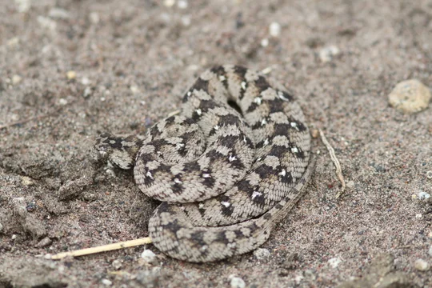
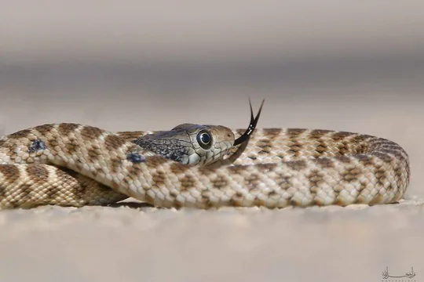
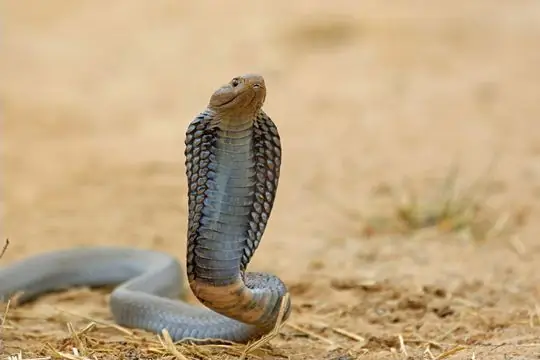
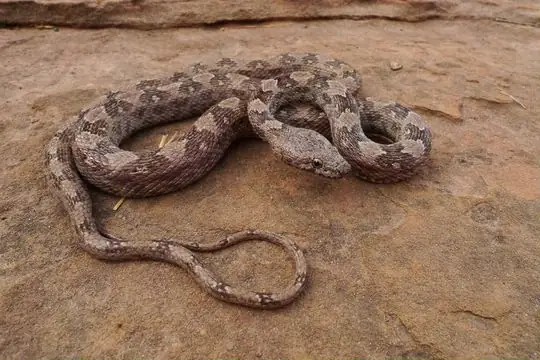
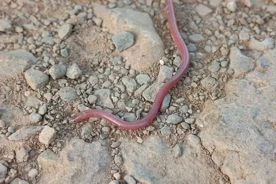
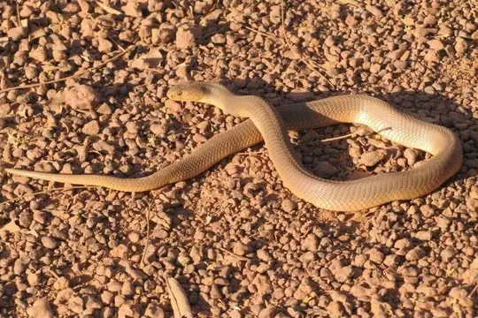
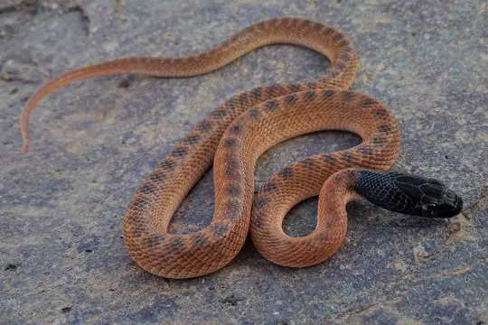
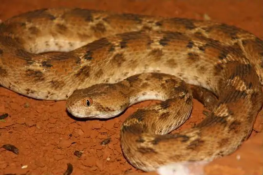
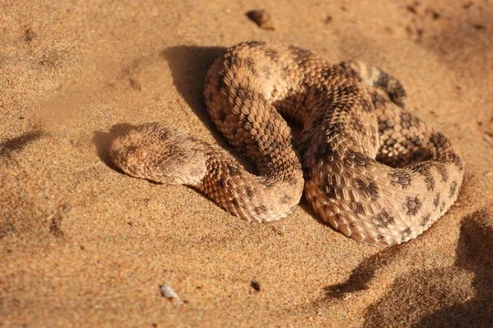
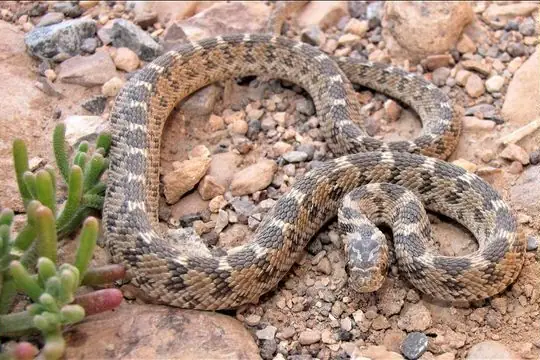

Snakes of Mauritania
33 living snake species are recorded in Mauritania in SnakeList: 17 venomous and 16 non-venomous, from 10 families.
- 33living species
- 10families
Danger to people · tap a number to show only those snakes
Harmful = dangerously venomous + giant constrictors. Harmless = not venomous and not a giant constrictor. Mildly venomous snakes have no serious bites to people documented. Any snake can bite.
These totals count the unique living snake species SnakeList records in Mauritania. A species counts if it is recorded anywhere in the country, so not every snake lives in every part of it.
In SnakeList’s checklist filters
How many of the 33 living species here each filter in the SnakeList app picks out – tap a number to show only those snakes.
Snake family6 types, 10 families
Type
Family
Habitats15 habitat groups
Habitats are estimated from where each snake is recorded and what kind of snake it is, as in SnakeList; a snake can count in several.
Characteristics17 venomous, 2 constrictors
Constrictor and Non-constrictor count only snakes whose family or genus is documented as constricting or not; the rest are not documented.
Other filters2 popular, 6 rare
- 0extinct
Species
Showing 33 species
 African Rock PythonPython sebae
African Rock PythonPython sebae
African Saw-scaled ViperEchis ocellatus
Algerian Whip SnakeHemorrhois algirus- No photo yetAmsâga Worm SnakeXerotyphlops etheridgei
 Angolan Garter SnakeElapsoidea semiannulata
Angolan Garter SnakeElapsoidea semiannulata Awl-headed SnakeLytorhynchus diadema
Awl-headed SnakeLytorhynchus diadema
Black-necked Spitting CobraNaja nigricollis Bouet's Worm SnakeMyriopholis boueti
Bouet's Worm SnakeMyriopholis boueti Brahminy BlindsnakeIndotyphlops braminus
Brahminy BlindsnakeIndotyphlops braminus Brown House Snake (fuliginosus)Boaedon fuliginosus
Brown House Snake (fuliginosus)Boaedon fuliginosus Cairo Blind SnakeMyriopholis cairi
Cairo Blind SnakeMyriopholis cairi Common Egg EaterDasypeltis scabra
Common Egg EaterDasypeltis scabra Desert Horned ViperCerastes cerastes
Desert Horned ViperCerastes cerastes
Dorr's RacerBamanophis dorri Egyptian CobraNaja haje
Egyptian CobraNaja haje Elegant Sand RacerPsammophis elegans
Elegant Sand RacerPsammophis elegans
Gambia Blind SnakeMyriopholis algeriensis Kalahari Sand SnakePsammophis afroccidentalis
Kalahari Sand SnakePsammophis afroccidentalis
Mali CobraNaja katiensis Moila SnakeMalpolon moilensis
Moila SnakeMalpolon moilensis Müller’s Sand BoaEryx muelleri
Müller’s Sand BoaEryx muelleri
North African CatsnakeTelescopus tripolitanus
Roman's Saw-scaled ViperEchis leucogaster Rukwa Sand RacerPsammophis rukwae
Rukwa Sand RacerPsammophis rukwae
Sahara Sand ViperCerastes vipera
Sahel Egg EaterDasypeltis sahelensis- No photo yetSahelian Burrowing AspAtractaspis micropholis
- No photo yetSmall-Scaled Burrowing AspAtractaspis microlepidota
 Spotted Blind SnakeAfrotyphlops punctatus
Spotted Blind SnakeAfrotyphlops punctatus Spotted Night AdderCausus maculatus
Spotted Night AdderCausus maculatus- No photo yetTrape's Garter SnakeElapsoidea trapei
 Watson's Burrowing AspAtractaspis watsoni
Watson's Burrowing AspAtractaspis watsoni Western Beaked SnakeRhamphiophis oxyrhynchus
Western Beaked SnakeRhamphiophis oxyrhynchus
No snakes in Mauritania match.
Mauritania’s snakes in numbers
- Families: Colubridae 6, Elapidae 5, Psammophiidae 5, Viperidae 5, Atractaspididae 3, Leptotyphlopidae 3, Typhlopidae 3, Boidae 1, Lamprophiidae 1, Pythonidae 1.
- 1 is recorded in no other country or territory in SnakeList: Amsâga Worm Snake.
How precisely they are recorded
Of the 33 living species recorded in Mauritania, 1 is recorded by region in SnakeList’s data; 32 are recorded only for Mauritania as a whole, so the region pages list them as possible rather than recorded. SnakeList records each species by region, not by exact spot, so a species listed for a region may live in only part of it.
Regions
The regions where SnakeList records snakes, with how many living species are recorded in each. Each page has its species, venomous snakes, families, the species found only there, its cities and neighbours.
- Trarza 1 species
No place matches that.